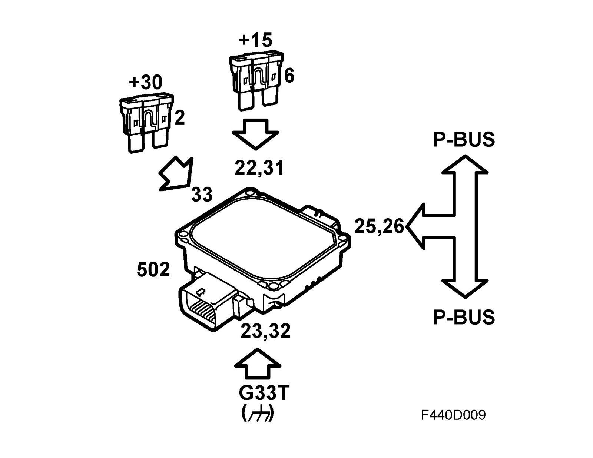
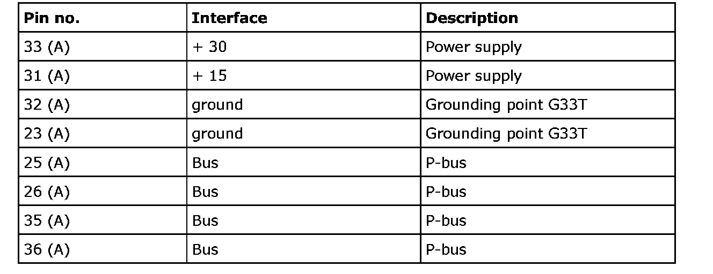
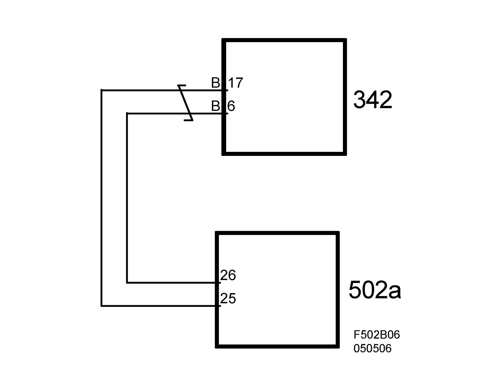
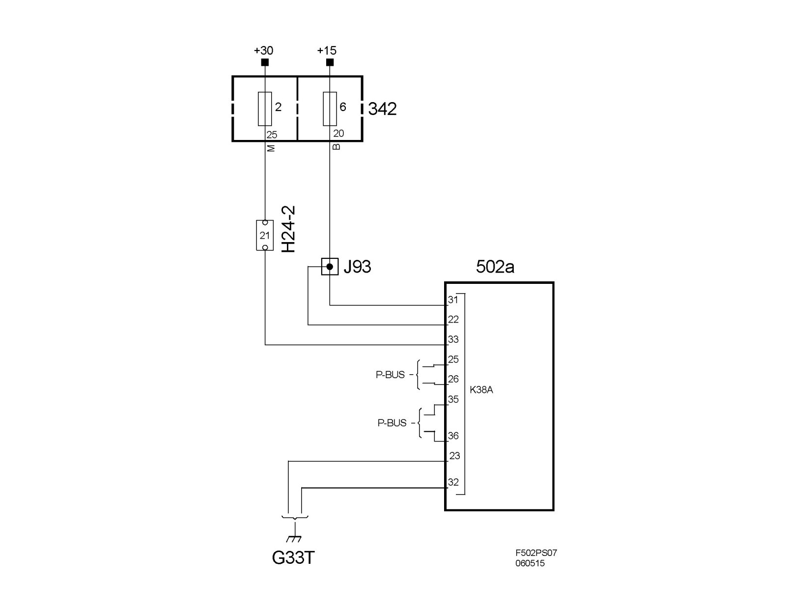

TCM
TCM, FA 57 (502a)Location
TCM, FA 57 (502a)

Main use
Controlling shifting points, system pressure and engagement of lock up.
Type
Microprocessor controlled IO device, working memory and one programmable EEPROM read memory.
Power supply, ground and bus communication
The control module is powered on pin 33 (A) with +30 voltage and on pins 31 (A) and 22 (A) with +15 voltage. The module is grounded via pins 32 (A) and 23 (A) to grounding point G33T. Bus communication (P-bus) takes place on pins 25-26 (A) and 35-36 (A).




Important
When handling the control module, it is important first to create a ground connection between yourself and for example the vehicle engine. Avoid touching the pins of the control module.